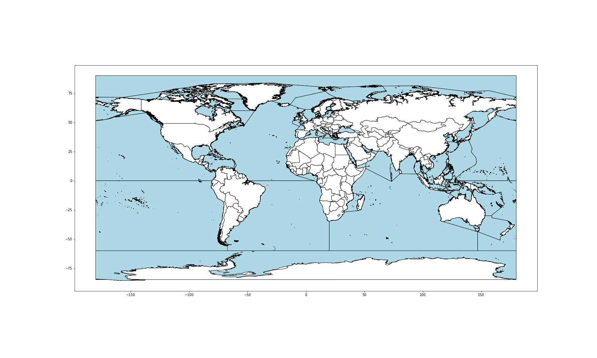

Georeference KG completion example¶
About¶
This is a simple test notebook to explore approachs to associating geometries in the OIH graph with named ocean regions. From Marine Regions (https://www.marineregions.org/) we downloaded the IHO Sea Areas dataset. This is a shapefile that is converted to WKT and loaded into a geopandas dataframe.
We then create a few points to compare against this. In this test we are only comparing points to the polygons. So this is what is called a “point in polygon” test. Later revisions to this could do polygon intersection or other tests. This is only a proof of concept notebook.
We then generate a new dataframe based on the matches. These matches could then be fed back into the graph as a sort of “Knowledge Graph Completion” workflow. Alternatively we can do gepsparql calls based on the sea WKT strings and do the search in the geosparql aware triple store.
References¶
Process¶

Conclusion¶
The generated dataframe holds the matches of the test Lat Long pairs to the named seas from the reference shape file. These results couild be fed back into the graph as keywords or items from a known list of terms for more explicate relation mapping.
Specifically, someting like https://schema.org/DefinedTerm where the property https://schema.org/DefinedTermSet would point back to the Marine Regions source documents and URL. Similarly these resources could be connected up to WikiData in a similar manner.
{
"@type": "DefinedTermSet",
"@id": "http://geonetwork.vliz.be/geonetwork/srv/eng/catalog.search#/metadata/f4cfa278-730f-4646-b6cc-a3dceaa3a1e5",
"name": "IHO Sea Areas"
},
{
"@type": "DefinedTerm",
"name": "Bay of Bengal",
"description": "IHO Sea Area Bay of Bengal",
"inDefinedTermSet": "http://geonetwork.vliz.be/geonetwork/srv/eng/catalog.search#/metadata/f4cfa278-730f-4646-b6cc-a3dceaa3a1e5"
},
For reference the WikiData resource is: https://www.wikidata.org/wiki/Q38684 which is an instance of “body of water”. So leveraging this type and the IHO names should allow relatively reliable link detection. Leveraging the top level Thing class in schema.org we would be looking at a simple
"sameAs": "https://www.wikidata.org/wiki/Q38684",
in the DefinedTerm type.
In the final listing below the “id” is the just the random string I associated with the test lat longs. I used a simple online map to just pick some random locations and gave them names. The “region” cames from the offical Marine Regions file.